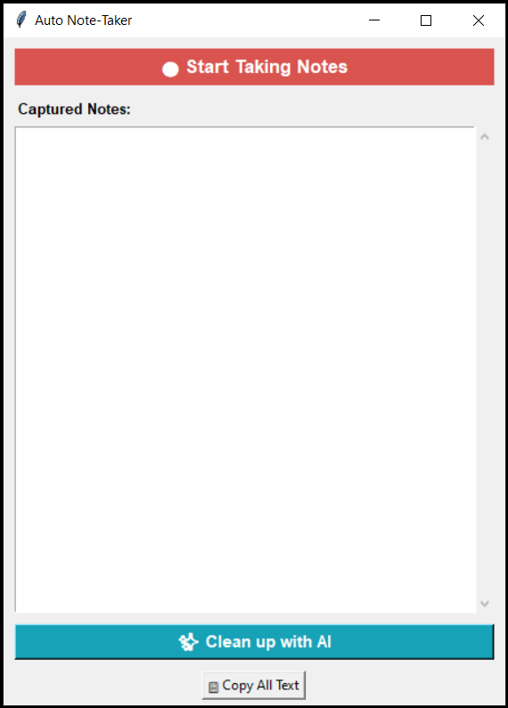
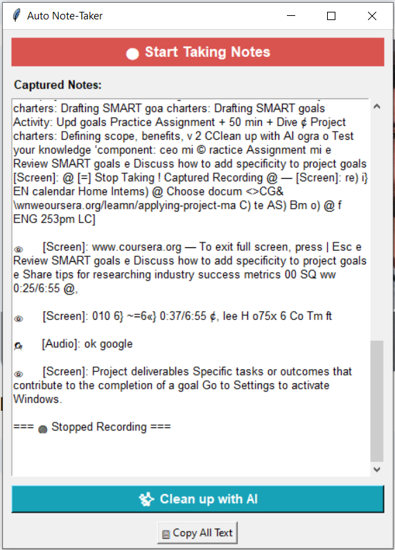
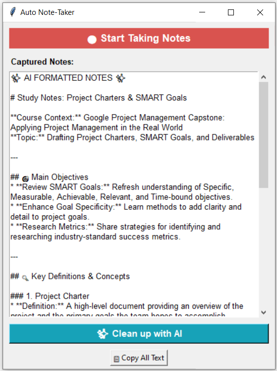

Online lectures and virtual meetings are great, but trying to actively listen while frantically typing notes is a struggle. You either miss what the speaker is saying, or you miss writing down what's on the slide.
I wanted to solve this by building a lightweight, "always-on-top" desktop application that does the note-taking for me. It needed to listen to the computer's internal audio, read the text on the screen, and use AI to automatically organize the raw data into perfect study guides.
Here is how I built an AI note-taker using Python, OCR, and the Gemini API.
The first challenge was audio. Standard speech recognition libraries default to external microphones, which means the app would pick up my keyboard clicks and struggle to hear the lecture through my speakers.
To fix this, I bypassed the microphone entirely. I integrated pyaudiowpatch to tap directly into the Windows Audio Session API (WASAPI) loopback. This allowed the app to intercept the internal stereo audio stream heading to the speakers and feed it directly into Google's speech recognition engine for incredibly accurate, real-time transcription.
Lecturers often put vital information on slides without reading it out loud. To capture this, the app needed eyes.
I used the mss library to target specific monitors (allowing me to keep the lecture on my second screen while taking tests or working on my primary screen) and took a silent screenshot every 8 seconds. From there, I passed the image through Tesseract OCR (Optical Character Recognition) to extract the text. I also wrote a custom filtering script to ignore repetitive UI elements like watermarks and search bars, ensuring only the actual lecture content was saved.
By the end of a lecture, the raw output is a massive, unstructured wall of transcribed audio and scraped screen text. It's accurate, but completely unreadable.
To transform this data, I integrated the new google-genai Python SDK. When the user clicks "Clean up with AI," the app sends the messy transcript to the Gemini 2.5 Flash model. I engineered the prompt to parse the context, fix broken sentences, remove duplicates, and output a beautifully formatted, bulleted Markdown study guide directly into the UI.
The final product is a seamless, featherweight desktop widget built with Python's tkinter. It pins itself to the top of your screen so it never gets lost behind browser tabs.
You simply hit "Record" at the start of the class, let it run silently in the background alongside OBS or your browser, and hit "Clean up with AI" when it's over. This project was a fantastic deep dive into multi-threading, custom audio streams, computer vision (OCR), and LLM API integrations.


Portfolio Assistant
Powered by Llama 3 · Online